Amazon で Neewer スマホリグフィルムメーカーグリップというものを買いました。下の写真のようなものです。
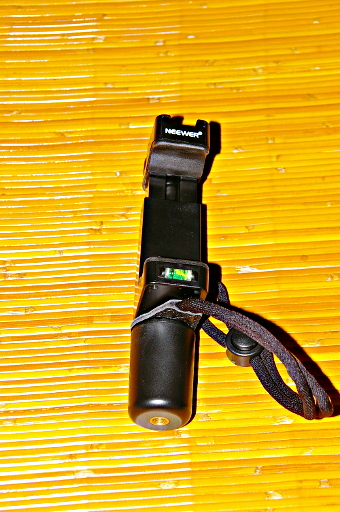
これは何をするものなのかというと Amazon のページを見てもわかるのですが、下の写真のように使います。
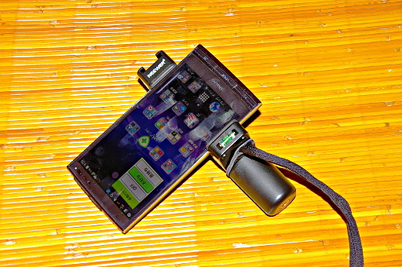
Amazon の写真と比較するとだいぶ右にずらしてセッティングしていますね。このセッティングが実はミソなんです。下の写真を見て下さい。
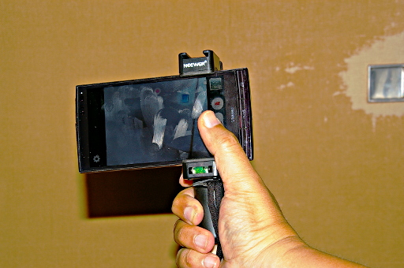
この位置だと右手の親指でスマホのカメラのシャッターアイコンを押せるんです。左手の人差し指とかで液晶をタップしてピントと露出を合わせてしまえば、あとは右手の親指 1 本でスマホで写真が撮れるというスグレモノなのです。
なぜこのグリップを使いたいのか。それは、なぜか両手でスマホで写真を撮るときにシャッターを押すと、スマホが左向きに首を振りませんか？あれは液晶のある面にシャッターがあるのが原因です。シャッターを押す時はスマホから右手を離して左手でささえることがほとんどだと思います。当然シャッターをタップしたら左手を支点にしてスマホの右サイドは前後に揺れますよね。
ところがこのグリップを使うと、グリップのおかげでそのスマホの揺れをほぼとめることができます。しかも右手片手だけでです。なのでブレブレ写真とはおさらばです。
それだけではありません。下の写真を見て下さい。
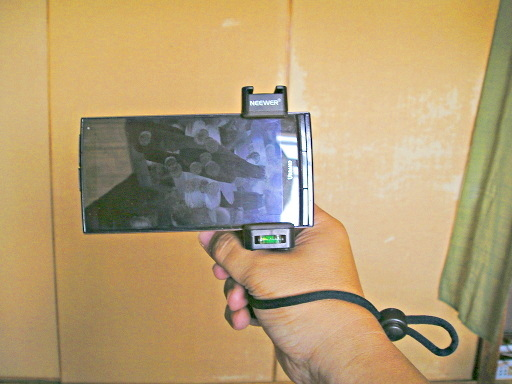
手首に巻くことのできるストラップがついています。これを手首にまけば梅田のスカイビルだろうと黒部ダムだろうと、腕を突き出して撮影していてもスマホを下に落として永久にさようならしてしまう心配がありません。
それで気になるスマホの取り付け方ですが、この製品では下の写真にあるネジをクルクル回して上側の固定具を上下させてスマホを固定するようになっています。これは一見バネ式に比べて手間に見えますが、一度取り付けてからは少しだけ緩めてスマホを横に抜き差しすれば手間はわずかになります。それにネジ式なのでスマホをがっちり固定できて安全です。
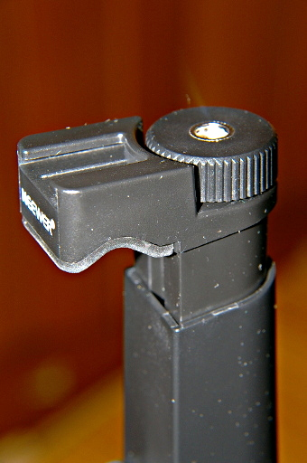
さて、スマホで写真と言えば自撮り棒で自撮りというのが一般的ですが、それでもタイマー機能を使って記念写真を撮りたいときもありますよね。三脚が必要ですが。この製品のグリップには下の写真のように 1/4 のネジ穴があります。
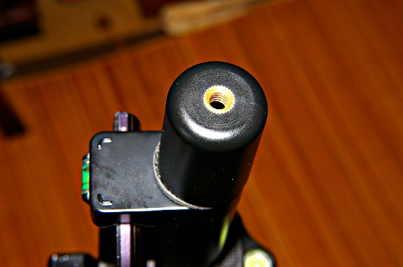
なので下の写真のように三脚に取り付けることができます。
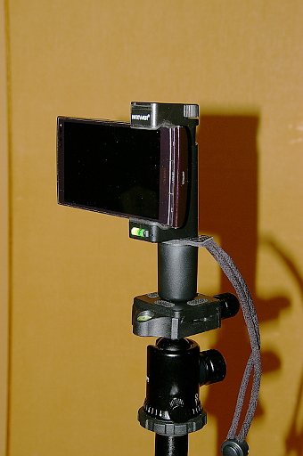
これでタイマー撮影も安心です。
それだけではなく、実はこの機能は必須なのかどうかさっぱりわからないのですが、この製品からグリップ部分を下の写真のように取り外すことができます。
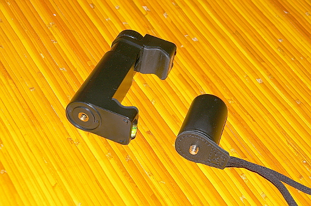
で写真のようにグリップを外してみるとスマホを固定するパーツの底部には下の写真のようにやはり 1/4 のネジ穴があいています。
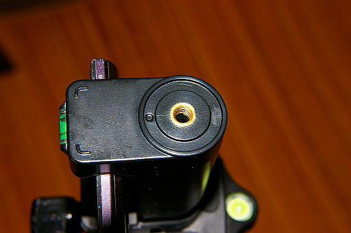
つまり (この機能が必要かどうかはともかく) グリップを外した状態で下の写真のように三脚に固定することができます。ちなみに前向きに突き出た大きなネジ 2 つは雲台のネジとアルカスイス互換クランプのネジです。気にしないで下さい。
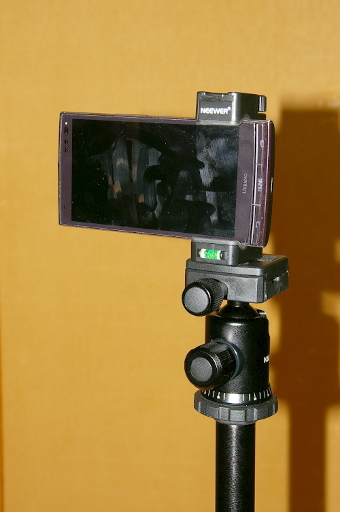
でこれで終わりかと思ったらまだあるんです。ネジ穴が。下の写真を見て下さい。
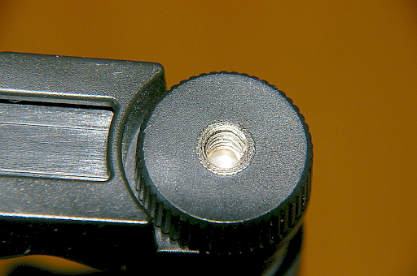
スマホを固定するためのネジにも 1/4 のネジ穴があいています。これは必要なのか？と思わなくもないですがあるんだから仕方がありません。
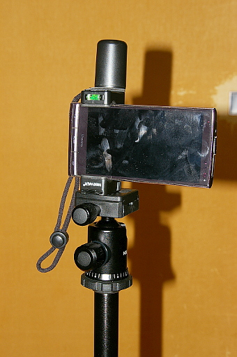
三脚にやっぱり固定できちゃいます。上下逆向きですが。
それだけではありません。グリップにも上のネジにも 1/4 のネジ穴が開いてるわけです。もし 1/4 のネジで固定するクランプが余っていたりするとこんなこともできちゃうわけです。
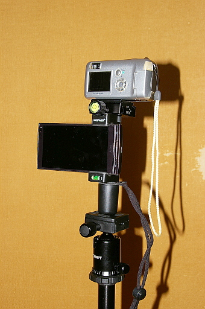
まぁ、後半の方は普通やらねーだろということのオンパレードでしたが、便利な製品には違いません。
この製品のメリットは 2 つありました。写真を撮るときにブレを防止できる。そしてストラップで高いところからスマホを落としてしまう心配がない。ということでした。この 2 点の理由だけで Neewer スマホリグフィルムメーカーグリップはお勧めできます。安いですし。
最後にあくまでついでですがこのグリップを取り付けて撮った写真を載せて今回はお別れしたいと思います。ではまた次回。